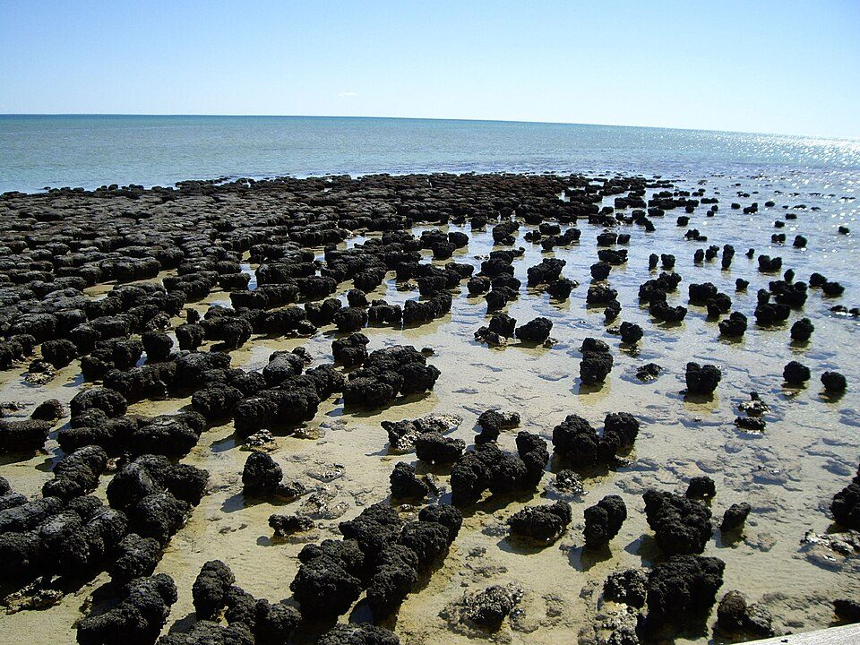

The origin of life
From molecules to cells: the clues to how life arose on Earth more than 3.5 billion years ago, and the organisms that thrive in extreme conditions.


How life arose from non-living matter is one of science's great unsolved questions. We roughly know when, and we have good clues about how, but no one has yet managed to create life from scratch in a laboratory.
The oldest evidence
The oldest fossils accepted by almost all scientists are stromatolites: layered rock structures built by communities of bacteria, about 3.5 billion years old, in Australia. Some chemical traces in rocks from Greenland and Canada suggest life may be older still, 3.7 billion years or more. In other words, life appeared very early, soon after the Earth stopped being a hell of magma and asteroids.
Stromatolites still form today in places such as Shark Bay in Australia: living fossils of the planet's first ecosystems.
The primordial soup
In 1953 the student Stanley Miller and his professor Harold Urey filled a glass apparatus with water, methane, ammonia and hydrogen, the gases they believed made up the early atmosphere, and passed electric sparks through it, like lightning. Within a week the water was full of amino acids, the building blocks of proteins. They showed that the molecules of life can form on their own under natural conditions.
The hypotheses
- RNA world: before DNA and proteins, there may have been RNA molecules able both to copy themselves and to speed up chemical reactions.
- Hydrothermal vents: deep-sea chimneys offer chemical energy, minerals and temperature differences that could have favoured life's first reactions.
- Warm ponds: Darwin himself imagined "some warm little pond" with salts and light. The shores of volcanic lakes, drying and wetting again, could have concentrated the molecules.
- Panspermia: the idea that the ingredients, or even microbes, came from space. Amino acids have been found in meteorites and in samples from the asteroid Bennu.
LUCA, our common ancestor
All living things, from bacteria to whales, use the same genetic code. That shows we descend from a single ancestor, which biologists call LUCA (the last universal common ancestor). It was a microbe that lived about 4 billion years ago and already had hundreds of genes.
Life in extreme conditions
Extremophiles are microbes that live where it would seem impossible: in boiling water, Antarctic ice, acid, kilometres underground or inside nuclear reactors. The Río Tinto in Huelva has red water as acidic as lemon juice and loaded with iron, yet it teems with microscopic life. NASA studies it as a model of what life on Mars might be like.
Videos to understand it better
- A Timeline of Life on Earth: 4 Billion Years of HistorySciShow · 8.5M views
- How Did Life Begin?History of the Earth · 1.9M views
Videos are from YouTube and belong to their creators. They only load when you click them. See all videos →